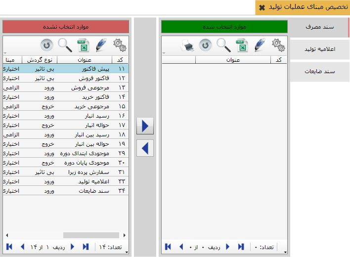

هر عملیات تولید می تواند بر مبنای عملیات دیگری صادر شود. برای تعیین مبناهای عملیات، منوی « تخصیص مبنای عملیات تولید» را از قسمت « اطلاعات پایه و عملیات» انتخاب کنید:

در سمت راست شکل فوق تمام عملیات هایی که در نرم افزار تعریف شده اند را مشاهده می کنید (عملیات پیش فاکتور در حالت انتخاب قرار دارد.). جدول سمت راست لیست عملیات هایی را که مبنای عملیات انتخاب شده هستند را در بر دارد، و در جدول سمت چپ کلیه عملیات تعریف شده در سیستم های انبار، تولید، سفارشات و خرید و فروش به جز موارد تخصیص یافته (موارد موجود در جدول سمت راست) را مشاهده می کنید. عملیات تخصیص را می توانید با دو فلش انجام
 دهید. هر عملیات می تواند چندین مبنا داشته باشد و همچنین هر عملیات می تواند مبنای چندین عملیات واقع شود.
دهید. هر عملیات می تواند چندین مبنا داشته باشد و همچنین هر عملیات می تواند مبنای چندین عملیات واقع شود.
در فرم صدور سند تولید با انتخاب یک عملیات اگر آن عملیات مبنا داشته باشد، مبناهای آن عملیات در پنجره ای جداگانه به شما نشان داده می شود تا شما سند مبنای مورد نظر را انتخاب کنید.